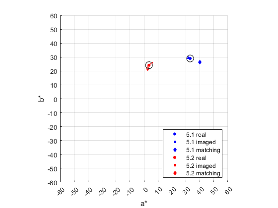

Credits
Team #: 1 | Authors: Cooper White & Gian-Mateo Tifone | Date: 10/23/2023
Contents
Step 1 - Initialization
clear cie = loadCIEdata;
Step 2 - Setup ref2XYZ
This function takes Surface reflectance, Color Matching Function, Illumination and converts it to XYZ tristimulus values. refs = Surface reflectance nx1 vector
cmfs = Color matching functions nx3 vector in [x,y,z] order
illum = SPD of light source nx1 vector
% R(λ) x,y,z S(λ) function XYZ = ref2XYZ(refs, cmfs, illum) k = 100 / sum(cmfs(:, 2).*illum); X = k * sum(cmfs(:, 1).*illum.*refs); Y = k * sum(cmfs(:, 2).*illum.*refs); Z = k * sum(cmfs(:, 3).*illum.*refs); XYZ = [X;Y;Z]; end
Step 3 - Test ref2XYZ
spectra.CC = load('ColorChecker_380-780-5nm.txt');
CC_Light.XYZs.D65 = ref2XYZ(spectra.CC(:,2:25),cie.cmf2deg,cie.illD65);
CC_Light.XYZs.D65
ans =
Columns 1 through 7
11.5145 39.1346 18.3488 11.1492 25.8437 31.7110 37.1457
10.3819 36.5981 19.6332 13.8551 24.3868 43.8600 29.5592
7.1502 27.0564 35.6470 7.4267 45.6142 44.8778 6.5006
Columns 8 through 14
13.8627 29.1328 8.5889 33.9174 46.1864 8.9183 15.0353
12.3179 19.8475 6.4569 44.1533 42.4957 6.4177 24.1079
39.3093 14.9941 15.4745 11.4297 8.6771 32.2736 9.6379
Columns 15 through 21
19.3447 55.8457 29.6768 14.4138 87.8402 57.9621 35.2286
11.3576 58.9726 19.3515 19.9750 92.3781 61.0426 37.0414
5.5526 9.6411 32.2626 39.0008 95.6125 65.4909 40.2256
Columns 22 through 24
19.3492 8.7646 3.2111
20.4708 9.2915 3.3763
22.1545 10.3188 3.9312
Step 4 - Setup XYZ2Lab
This function takes XYZ tristimulus values and XYZn tristimulus values (of reference illuminant) and converts it to L*a*b*
XYZ = Tristimulus values 3xn vector 3xn vector, [X;Y;Z]
XYZn = Tristimulus values (of ref. illuminant)
3x1 vector [X;Y;Z]
function Lab = XYZ2Lab(XYZ, XYZn) % Calculate Ratios, the 'x' to be compared in the Piecewise function Ratios = XYZ ./ XYZn; % Define anonymous functions, the parts of the Piecewise function Cond1 = @(x) x.^(1/3) ; %x > 0.008856 Cond2 = @(x) 7.787*x + 16/116; %x ≤ 0.008856 % Apply operations of Piecewise cond1Index = Ratios > 0.008856 ; Ratios(cond1Index) = Cond1(Ratios(cond1Index)) ; Ratios(~cond1Index) = Cond2(Ratios(~cond1Index)); % Calculate L*a*b* L = 116*Ratios(2,:)-16 ; a = 500*(Ratios(1,:) - Ratios(2,:)); b = 200*(Ratios(2,:) - Ratios(3,:)); Lab = [L;a;b]; end
Step 5 - Test XYZ2Lab
Calculate XYZn values
CC_Light.XYZn.D65 = ref2XYZ(cie.PRD,cie.cmf2deg,cie.illD65); % Calculate Lab values CC_Light.Lab.D65 = XYZ2Lab(CC_Light.XYZs.D65, CC_Light.XYZn.D65); % The name of each patch in the Macbeth Color Checker names = textread('ColorChecker_names.txt','%s','delimiter','|'); %#ok<DTXTRD> % TABLE - Header fprintf('%s', 'ColorChecker XYZ and Lab values (D65 illuminant and 2 deg. observer)', newline, newline) fprintf('%s %4s %8s %8s %8s %8s %8s %14s\n', 'Patch #', 'X', 'Y', 'Z', 'L*', 'a*', 'b*', 'Patch Name') % TABLE - Body fspec = '%5.0f %8.3f %8.3f %8.3f %8.3f %8.3f %8.3f %s %2s\n'; for patchnum = 1:size(CC_Light.Lab.D65,2) % format 1 X,Y,Z L,a,b Patch name fprintf(fspec, patchnum, CC_Light.XYZs.D65(1, patchnum), CC_Light.XYZs.D65(2,patchnum), CC_Light.XYZs.D65(3,patchnum), CC_Light.Lab.D65(1,patchnum), CC_Light.Lab.D65(2,patchnum), CC_Light.Lab.D65(3,patchnum),' ', names{patchnum,1}) % Prints each Patch's XYZ + LAB end
ColorChecker XYZ and Lab values (D65 illuminant and 2 deg. observer)
Patch # X Y Z L* a* b* Patch Name
1 11.515 10.382 7.150 38.519 12.410 13.309 Dark Skin
2 39.135 36.598 27.056 66.974 14.329 17.320 Light Skin
3 18.349 19.633 35.647 51.420 -1.624 -21.603 Blue Sky
4 11.149 13.855 7.427 44.024 -13.963 21.774 Foliage
5 25.844 24.387 45.614 56.473 11.544 -24.698 Blue Flower
6 31.711 43.860 44.878 72.135 -33.101 3.115 Bluish Green
7 37.146 29.559 6.501 61.272 32.497 55.059 Orange
8 13.863 12.318 39.309 41.717 14.416 -42.900 Purplish Blue
9 29.133 19.847 14.994 51.664 45.468 13.382 Moderate Red
10 8.589 6.457 15.474 30.537 23.785 -24.136 Purple
11 33.917 44.153 11.430 72.331 -26.083 57.948 Yellow Green
12 46.186 42.496 8.677 71.211 17.187 64.297 Orange Yellow
13 8.918 6.418 32.274 30.443 27.024 -53.277 Blue
14 15.035 24.108 9.638 56.196 -40.771 35.342 Green
15 19.345 11.358 5.553 40.176 51.976 22.689 Red
16 55.846 58.973 9.641 81.277 -0.508 78.575 Yellow
17 29.677 19.352 32.263 51.096 50.004 -17.653 Magenta
18 14.414 19.975 39.001 51.809 -25.642 -25.126 Cyan
19 87.840 92.378 95.613 96.975 0.076 3.262 White
20 57.962 61.043 65.491 82.402 -0.133 0.831 Neutral 8
21 35.229 37.041 40.226 67.308 0.079 0.125 Neutral 6.5
22 19.349 20.471 22.154 52.365 -0.541 0.237 Neutral 5
23 8.765 9.291 10.319 36.540 -0.568 -0.600 Neutral 3.5
24 3.211 3.376 3.931 21.492 0.035 -1.462 Black
Step 6 - Darker CC Spectra
Darker CC Spectra
CC_Dark.XYZs.D65 = CC_Light.XYZs.D65*0.02; % Dark L*a*b* values CC_Dark.Lab.D65 = XYZ2Lab(CC_Dark.XYZs.D65, CC_Light.XYZn.D65); fprintf('%s', 'ColorChecker (Dark) XYZ and Lab values (D65 illuminant and 2 deg. observer)', newline, newline); fprintf('%s %4s %8s %8s %8s %8s %8s %14s\n', 'Patch #', 'X', 'Y', 'Z', 'L*', 'a*', 'b*', 'Patch Name') % TABLE - Body fspec = '%5.0f %8.3f %8.3f %8.3f %8.3f %8.3f %8.3f %s %2s\n'; for patchnum = 1:size(CC_Light.Lab.D65,2) % format 1 X,Y,Z L,a,b Patch name fprintf(fspec, patchnum, CC_Dark.XYZs.D65(1, patchnum), CC_Dark.XYZs.D65(2,patchnum), CC_Dark.XYZs.D65(3,patchnum), CC_Dark.Lab.D65(1,patchnum), CC_Dark.Lab.D65(2,patchnum), CC_Dark.Lab.D65(3,patchnum),' ', names{patchnum, 1}) % Prints each Patch's XYZ + LAB end
ColorChecker (Dark) XYZ and Lab values (D65 illuminant and 2 deg. observer)
Patch # X Y Z L* a* b* Patch Name
1 0.230 0.208 0.143 1.876 1.350 1.188 Dark Skin
2 0.783 0.732 0.541 6.612 3.565 3.659 Light Skin
3 0.367 0.393 0.713 3.547 -0.255 -4.082 Blue Sky
4 0.223 0.277 0.149 2.503 -1.654 2.191 Foliage
5 0.517 0.488 0.912 4.406 2.184 -5.453 Blue Flower
6 0.634 0.877 0.898 7.924 -8.173 0.823 Bluish Green
7 0.743 0.591 0.130 5.340 7.416 7.347 Orange
8 0.277 0.246 0.786 2.225 1.766 -7.409 Purplish Blue
9 0.583 0.397 0.300 3.586 8.414 1.893 Moderate Red
10 0.172 0.129 0.309 1.166 2.009 -2.416 Purple
11 0.678 0.883 0.229 7.977 -6.593 10.483 Yellow Green
12 0.924 0.850 0.174 7.677 4.646 10.754 Orange Yellow
13 0.178 0.128 0.645 1.159 2.309 -7.234 Blue
14 0.301 0.482 0.193 4.355 -6.454 4.752 Green
15 0.387 0.227 0.111 2.052 7.005 1.949 Red
16 1.117 1.179 0.193 10.405 -0.138 15.181 Yellow
17 0.594 0.387 0.645 3.496 9.246 -3.202 Magenta
18 0.288 0.399 0.780 3.609 -3.745 -4.935 Cyan
19 1.757 1.848 1.912 14.666 0.021 0.885 White
20 1.159 1.221 1.310 10.710 -0.036 0.226 Neutral 8
21 0.705 0.741 0.805 6.692 0.019 0.030 Neutral 6.5
22 0.387 0.409 0.443 3.698 -0.088 0.038 Neutral 5
23 0.175 0.186 0.206 1.679 -0.054 -0.058 Neutral 3.5
24 0.064 0.068 0.079 0.610 0.002 -0.073 Black
Step 7 - Setup deltaEab
Takes 2 sets of Lab and converts them to Delta Eab values
Lab is a 3xn matrix
DEab is a 1xn matrix
function DEab = deltaEab(Lab1, Lab2) % L1* - L2* a1* - a2* b1* - b2* DEab = sqrt( (Lab1(1, :)-Lab2(1,:)).^2 + (Lab1(2,:)-Lab2(2,:)).^2 + (Lab1(3,:)-Lab2(3,:)).^2 ); end
Step 8 - Test deltaEab
spectra.MC = load('MetaChecker_380-780-5nm.txt'); % Use 'spectra.' struct for spectra data % Calculate XYZ for MC, both under illA and illD65 MC_Light.XYZs.D65 = ref2XYZ(spectra.MC(:,2:25),cie.cmf2deg,cie.illD65); MC_Light.XYZs.A = ref2XYZ(spectra.MC(:,2:25),cie.cmf2deg,cie.illA); % Calculate XYZn for MC, both under illA and illD65 MC_Light.XYZn.D65 = ref2XYZ(cie.PRD,cie.cmf2deg,cie.illD65); MC_Light.XYZn.A = ref2XYZ(cie.PRD,cie.cmf2deg,cie.illA); % Calculate LAB for MC, both under illA and illD65 MC_Light.Lab.D65 = XYZ2Lab(MC_Light.XYZs.D65, MC_Light.XYZn.D65); MC_Light.Lab.A = XYZ2Lab(MC_Light.XYZs.A , MC_Light.XYZn.A) ; % Calculate XYZs for CC, both under illA and illD65 CC_Light.XYZs.D65; %Already made CC_Light.XYZs.A = ref2XYZ(spectra.CC(:,2:25),cie.cmf2deg,cie.illA); % Calculate XYZn for CC, both under illA and illD65 CC_Light.XYZn.D65; %Already made CC_Light.XYZn.A = ref2XYZ(cie.PRD,cie.cmf2deg,cie.illA); % Calculate LAB for CC, under illA and illD65 CC_Light.Lab.D65; %Already made CC_Light.Lab.A = XYZ2Lab(CC_Light.XYZs.A,CC_Light.XYZn.A); % Calculate DEab(65) and DEab(A) DEab.D65 = deltaEab(MC_Light.Lab.D65, CC_Light.Lab.D65); %DEab - D65 DEab.A = deltaEab(MC_Light.Lab.A, CC_Light.Lab.A) ; %DEab - A % TABLE - Header fprintf('%s', "ColorChecker and Metachecker color differences", newline, newline); fprintf('%s %10s %11s\n', "Patch #", "DEab(D65)", "DEab(illA)"); % TABLE - Body fspec = '%7.0f %10.3s %7.3f\n'; for patchnum = 1:size(DEab.A, 2) fprintf(fspec, patchnum, DEab.D65(1, patchnum), DEab.A(1, patchnum)); end
ColorChecker and Metachecker color differences
Patch # DEab(D65) DEab(illA)
1 2.597e-07 22.636
2 1.136e-07 22.178
3 1.056e-07 32.275
4 1.905e-07 28.232
5 3.980e-07 25.937
6 1.326e-07 29.487
7 8.581e-08 17.309
8 1.454e-07 27.241
9 1.665e-07 12.210
10 2.907e-07 19.509
11 1.561e-07 22.623
12 1.305e-07 16.970
13 1.083e-07 20.083
14 1.193e-07 26.099
15 6.708e-08 7.053
16 1.330e-07 11.532
17 6.468e-09 10.690
18 8.581e-08 31.619
19 2.661e-07 2.545
20 6.948e-08 15.940
21 1.846e-07 28.926
22 8.337e-08 26.751
23 3.668e-07 20.574
24 1.022e-07 18.567
Step 9 - Calculated, LAB, DeltaE
% ~Code imported from Proj3~ CalcPatchData; % Calculate XYZn for D50 CC_Light.XYZn.D50 = ref2XYZ(cie.PRD,cie.cmf2deg,cie.illD50); % Calculated values for LAB Patch 1 patch1.CalcrealLab = XYZ2Lab(patch1.CalcrealXYZ, CC_Light.XYZn.D50); patch1.CalcimagedLab = XYZ2Lab(patch1.CalcimagedXYZ, CC_Light.XYZn.D50); patch1.CalcmatchingLab = XYZ2Lab(patch1.CalcmatchingXYZ, CC_Light.XYZn.D50); % Calculated values for LAB Patch 2 patch2.CalcrealLab = XYZ2Lab(patch2.CalcrealXYZ, CC_Light.XYZn.D50); patch2.CalcimagedLab = XYZ2Lab(patch2.CalcimagedXYZ, CC_Light.XYZn.D50); patch2.CalcmatchingLab = XYZ2Lab(patch2.CalcmatchingXYZ, CC_Light.XYZn.D50); % Patch1 DEab % Patch 1 real Patch 1 imaged patch1.DEab.real_imaged = deltaEab(patch1.CalcrealLab, patch1.CalcimagedLab) ; % Patch 1 real Patch 1 matching patch1.DEab.real_matching = deltaEab(patch1.CalcrealLab, patch1.CalcmatchingLab); % Patch2 DEab % Patch 2 real Patch 2 imaged patch2.DEab.real_imaged = deltaEab(patch2.CalcrealLab, patch2.CalcimagedLab) ; % Patch 2 real Patch 2 matching patch2.DEab.real_matching = deltaEab(patch2.CalcrealLab, patch2.CalcmatchingLab); % TABLE 5.1 - Header fprintf('%s\n\n',"Calculated XYZ, Lab, and deltaE values (w.r.t. real patches)"); fprintf('%48s\n', "patch 5.1"); fprintf('%13s %9s %9s %10s %9s %9s %9s\n', "X", "Y", "Z", "L", "a", "b", "dEab"); % TABLE 5.1 - Body fprintf('%8s %2.4f %2.4f %2.4f %s', 'real',patch1.CalcrealXYZ, ' '); fprintf('%2.4f %2.4f %2.4f\n', patch1.CalcrealLab); fprintf('%8s %2.4f %2.4f %2.4f %s', 'imaged', patch1.CalcimagedXYZ, ' '); fprintf('%2.4f %2.4f %2.4f %s %2.4f\n', patch1.CalcimagedLab, ' ', patch1.DEab.real_imaged); fprintf('%8s %2.4f %2.4f %2.4f %s', 'matching', patch1.CalcmatchingXYZ,' '); fprintf('%2.4f %2.4f %2.4f %s %2.4f\n\n\n', patch1.CalcmatchingLab, ' ', patch1.DEab.real_matching); % TABLE 5.2 - Header fprintf('%48s\n', "patch 5.2"); fprintf('%13s %9s %9s %10s %9s %8s %9s\n', "X", "Y", "Z", "L", "a", "b", "dEab"); % TABLE 5.2 - Body fprintf('%8s %2.4f %2.4f %2.4f %s', 'real',patch2.CalcrealXYZ, ' '); fprintf('%2.4f %2.4f %2.4f\n', patch2.CalcrealLab); fprintf('%8s %2.4f %2.4f %2.4f %s', 'imaged', patch2.CalcimagedXYZ, ' '); fprintf('%2.4f %2.4f %2.4f %s %2.4f\n', patch2.CalcimagedLab, ' ', patch2.DEab.real_imaged); fprintf('%8s %2.4f %2.4f %2.4f %s', 'matching', patch2.CalcmatchingXYZ,' '); fprintf('%2.4f %8.4f %2.4f %s %2.4f\n\n\n', patch2.CalcmatchingLab, ' ', patch2.DEab.real_matching);
Calculated XYZ, Lab, and deltaE values (w.r.t. real patches)
patch 5.1
X Y Z L a b dEab
real 59.5211 48.4238 21.6636 75.0914 33.0997 28.9963
imaged 58.5066 48.1247 21.1848 74.9035 31.4772 29.6227 1.7493
matching 57.4105 44.1494 20.6318 72.3282 39.9174 26.2984 7.8356
patch 5.2
X Y Z L a b dEab
real 72.7950 73.7131 39.5527 88.7867 3.6180 24.1522
imaged 68.9412 68.9101 35.5713 86.4595 5.4686 25.5782 3.2976
matching 75.1286 76.4988 43.0917 90.0904 2.8126 21.8646 2.7534
Step 10 - Visualize Color Differences
figure(1) hold on % Plot Patch 1 plot(patch1.CalcrealLab(2,1),patch1.CalcrealLab(3,1) ,'o' ,'MarkerFaceColor', 'b', 'MarkerEdgeColor', 'b', 'MarkerSize', 4, 'DisplayName', '5.1 real'); plot(patch1.CalcimagedLab(2,1),patch1.CalcimagedLab(3,1) ,'square' ,'MarkerFaceColor', 'b', 'MarkerEdgeColor', 'b', 'MarkerSize', 4, 'DisplayName', '5.1 imaged'); plot(patch1.CalcmatchingLab(2,1),patch1.CalcmatchingLab(3,1),'diamond','MarkerFaceColor', 'b', 'MarkerEdgeColor', 'b', 'MarkerSize', 4, 'DisplayName', '5.1 matching'); % Plot Patch 2 plot(patch2.CalcrealLab(2,1),patch2.CalcrealLab(3,1) ,'o' ,'MarkerFaceColor', 'r', 'MarkerEdgeColor', 'r', 'MarkerSize', 4, 'DisplayName', '5.2 real'); plot(patch2.CalcimagedLab(2,1),patch2.CalcimagedLab(3,1) ,'square' ,'MarkerFaceColor', 'r', 'MarkerEdgeColor', 'r', 'MarkerSize', 4, 'DisplayName', '5.2 imaged'); plot(patch2.CalcmatchingLab(2,1),patch2.CalcmatchingLab(3,1),'diamond','MarkerFaceColor', 'r', 'MarkerEdgeColor', 'r', 'MarkerSize', 4, 'DisplayName', '5.2 matching'); % Draw viscircles % Requires the "Image Processing Toolbox" Add-on to be installed % [x1 , Y1] % [x2 , y2] % radius 2.5, as that's the average of 2-3 DEab JND's viscircles([patch1.CalcrealLab(2,1), patch1.CalcrealLab(3,1) ; ... patch2.CalcrealLab(2,1), patch2.CalcrealLab(3,1)], ... 2.5, 'Color', 'k', LineWidth=.7); % Format plot axis square %So the circles look like circles grid on %Add gridlines xlabel('a*') ylabel('b*') xticks(-60:10:60) yticks(-60:10:60) xlim([-60 60]); ylim([-60 60]); legend({'5.1 real', '5.1 imaged', '5.1 matching', ... '5.2 real', '5.2 imaged', '5.2 matching'}, ... 'Location', 'southeast', 'FontSize',9)
Feedback
i) Gian-Mateo wrote the functions. Cooper and Gian-Mateo coded the lab.
ii) The largest 'setbacks' were optimizing the XYZ2Lab function without for-loops. Also, having to reinstall MATLAB for the "Image Processing Toolbox" - which wouldn't otherwise install.
iii) Focusing on how to fully utilize MATLAB, i.e. without for loops, focusing on matrix operations. Also, embedding structs within structs.
iv) Reintroducing, or delaying, the introduction of Matrix operations (such as calling items at an array indexes + how MATLAB interprets 1 as "True" when knowing where to call an index) closer to Projects 3 and 4